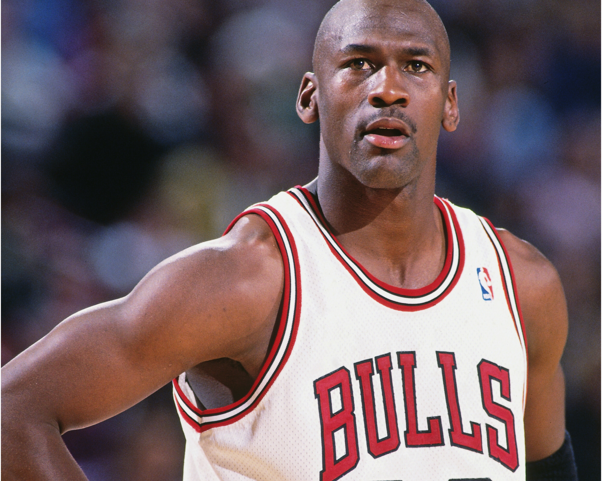
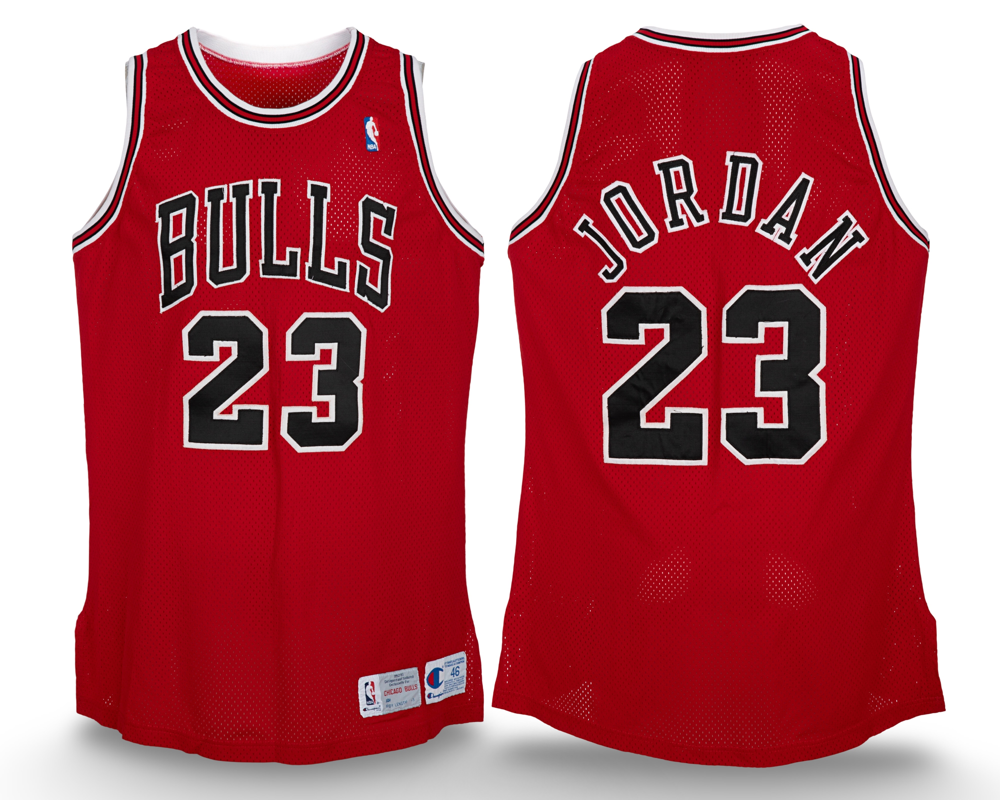

1992–93
Games Reviewed —
PRE 0 / 0 •
REG 32 / 82
Last Updated: February 15, 2026
Population Summary
| Style | Confirmed | Public | Audit |
|---|---|---|---|
| Home | 0 | 0 | ⏳ |
| Away | 2 | 1 | ⏳ |
The Michael Jordan Archive population study is an ongoing research initiative. Population conclusions reflect best-available documentation and comparative review.
Collectors, researchers, and institutions who wish to contribute relevant primary-source materials are invited to contact the archive.
Submissions are reviewed independently and treated with discretion.
Home (White)

Publicly documented example.
Research Notes & Provenance
This entry will be updated if a distinct physical example becomes publicly documented or as complete season audit is underway and new evidence becomes apparent.
- Photo-matched to the cover of Sports Illustrated issue 10/18 1993.
- Owned by a private collector.
- Total documented photo-matched games: 33.
Away (Red)

Game imagery used where no physical public example exists.
Public Sale Details
- Auction House: Heritage Auctions
- Sale Date: May 17, 2025
- Lot #: Lot 81953
- Sale Price: $2,623,000
- Photo-Matched: Yes
- Games Photo-Matched: 33
- Photo-Matched By: Mei Gray, SIA, MJA
Research Notes
Methodology & Scope
Audit status: Complete
Confidence level: High
Population conclusions reflect comprehensive multi-source visual review of all documented regular season games,
alongside publicly documented examples where applicable. Detailed audit logs and continuity documentation remain proprietary.
Some supporting documentation may not be publicly disclosed. Where possible, public auction records and primary-source imagery references are provided for transparency.